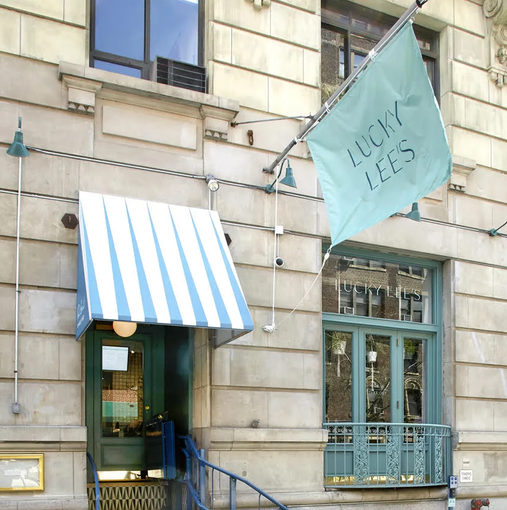

Chinese Restaurant Syndrome, or CRS, in Merriam-Webster's is defined as:
"A group of symptoms (such as numbness of the neck, arms, and back with headache, dizziness, and palpitations) that is held to affect susceptible persons eating food and especially Chinese food heavily seasoned with monosodium glutamate."
It first appeared in the reference book in 1993, but entered American parlance decades earlier.
The etymology is traced to a 1968 letter that appeared in the New England Journal of Medicine claiming that Chinese food brought forth ailments.
The letter was uncovered to be a hoax, but the myth remains. The US Food and Drug Administration has long approved MSG for consumption, and studies have failed to show that the chemical causes the alleged "syndrome". ( https://www.bbc.com/news/world-us-canada-51139005 )
Lucky Lee's Discriminatory Rhetoric
In 2019, a fast-casual restaurant called Lucky Lee’s opened for business in New York City with an extremely problematic premise: The white owner, Arielle Haspel, promised to serve up “clean Chinese” that was less salty, less greasy, and MSG-free, so that diners may enjoy their favorite dishes without feeling “bloated and icky,” according to one of her Instagram posts.
The restaurant shut down after less than a year of operation amid accusations of racism and cultural appropriation from the Asian American community. But the whole experience is just one battle in the war of mixed messaging around MSG. ( https://www.menshealth.com/health/a37808983/msg-racism-chinese-restaurant-syndrome/ )

Main Takeaways
1
The health-related controversy of MSG in the United States is linked to a history of prejudice and discriminatory rhetoric and action against Asian cultures, specifically Chinese culture.
2
Despite its widespread use and many benefits, consumer misunderstanding about MSG is quite common.
3
There is still much work to be done on dispelling the racism around this seasoning. Today, there are still some Chinese restaurants that feel the need to declare they do not use MSG in their food.